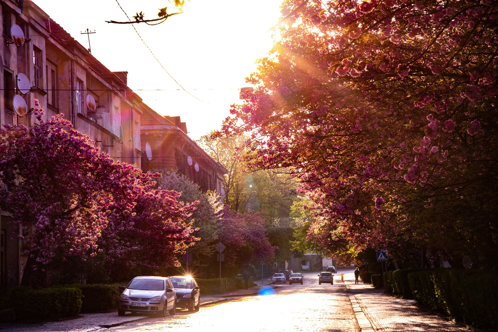
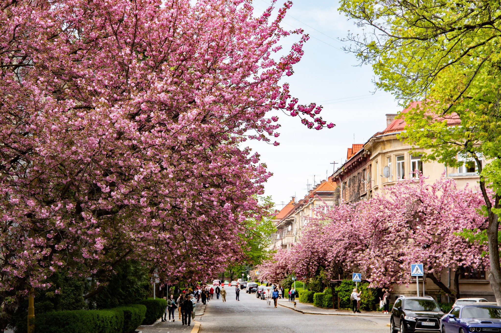

Алеї сакур
Японська декоративна вишня — сакура — з'явилася в Ужгороді ще в 1923 році, її привезли з Відня. На сьогоднішній день це дерево можна зустріти в багатьох куточках міста, на вулицях Ракоці і Довженка.
Традиційно цвітіння японської вишні збігається з культурною подією — фестивалем «Сакура Фест», який щороку припадає на кінець квітня-початок травня. на мапі// вздовж вулиці Бращайків від площі Пушкіна на набережній Незалежності до перехрестя з вулицею Ференца Ракоці